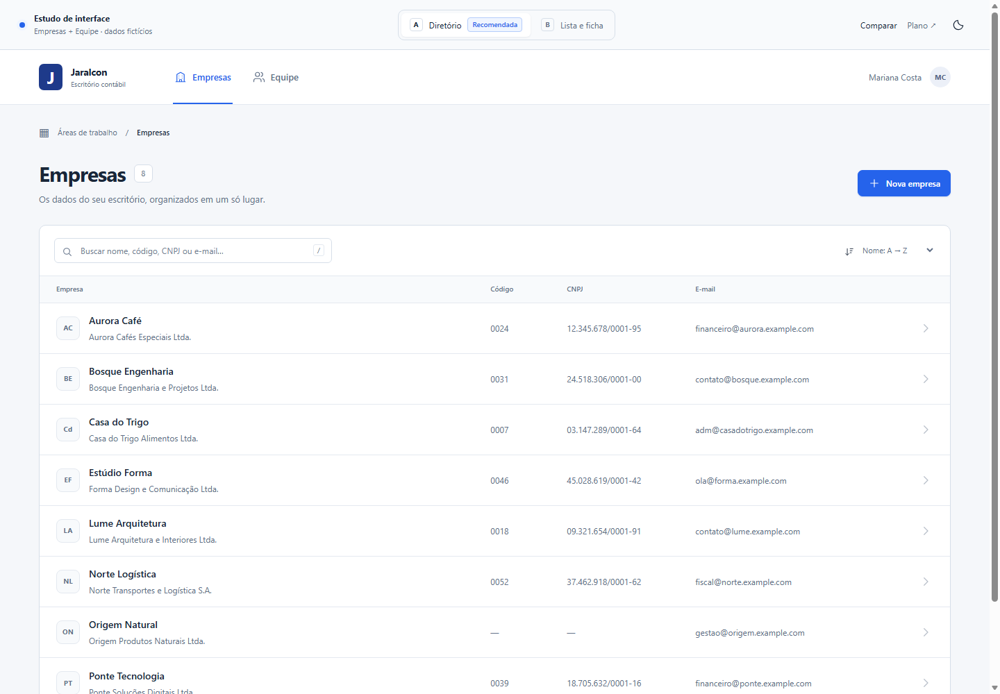
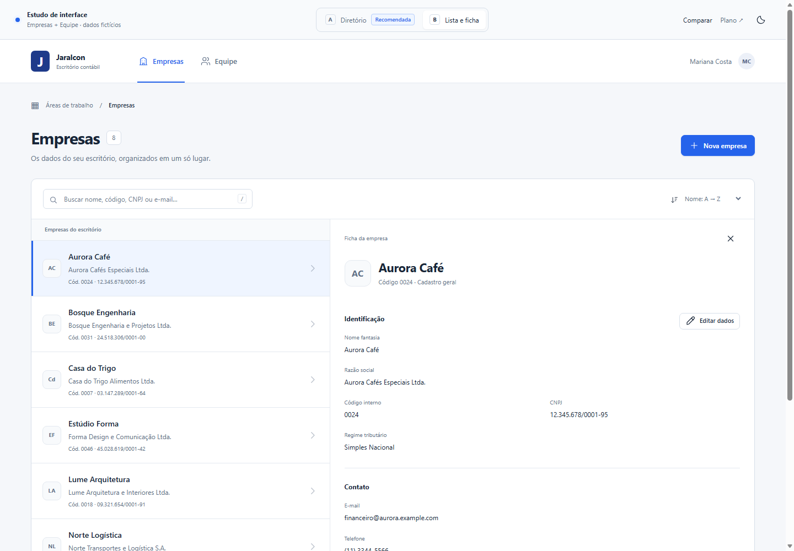

A · DiretórioRecomendada  Encontrar e comparar A lista ocupa toda a largura. Ao abrir um cadastro, a ficha desliza pela direita. Mais espaço para comparar código, CNPJ, papel e situação. Explorar opção A
B · Lista e fichaAlternativa  Revisar em sequência A ficha fica ao lado da lista. Facilita alternar entre registros; mostra menos colunas de uma vez e precisa de mais largura. Explorar opção B